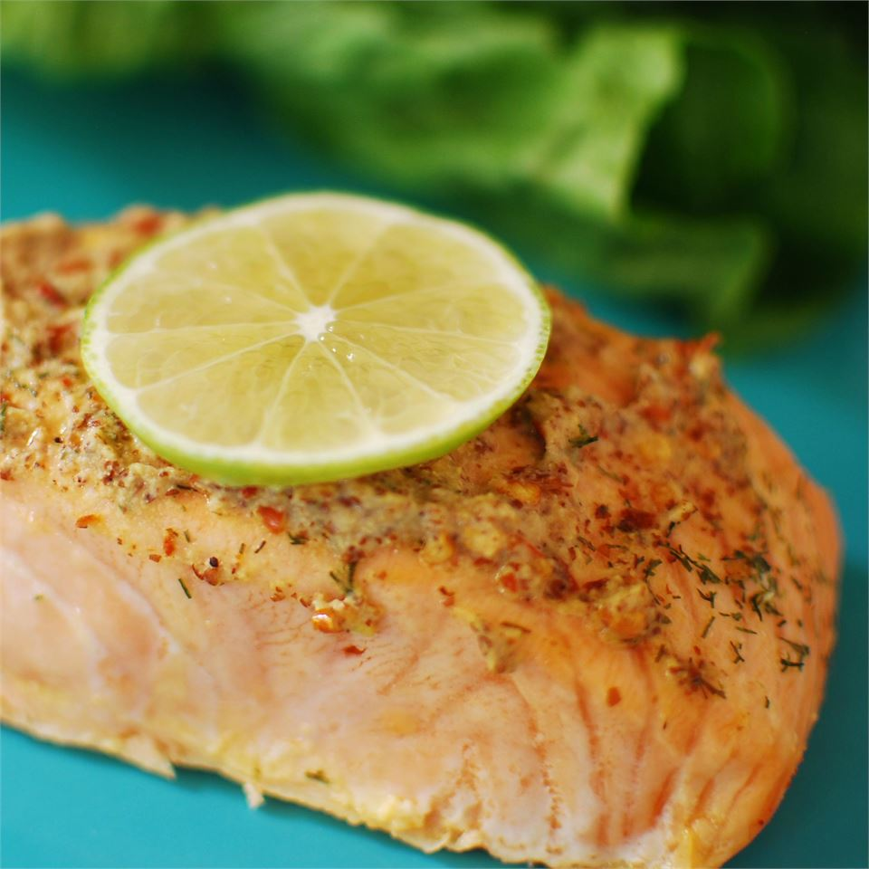

Spicy Garlic Salmon

Description:
Easy to make Honey Garlic Chicken recipe. Just prep and throw into
a slow cooker.
The ingredients are simple to acquire and leaves this fatty piece of
chicken golden brown and juicy.
- 2 cloves garlic, crushed
- 1 dried red chile pepper
- 1 tablespoon olive oil
- 1 teaspoon whole grain mustard
- 2 tablespoons fresh lime juice
- sea salt to taste
- freshly ground black pepper
- 2 (6 ounce) fillets salmon
Step 1
- Preheat oven to 400 degrees F (200 degrees C). Line a medium baking dish with aluminum foil. Lightly grease foil.
Step 2
- With a mortar and pestle, grind together the garlic, chile pepper, and olive oil. Mix into a thick paste with the mustard, lime juice, salt, and pepper. Place the salmon fillets in the prepared baking dish, and coat with the paste mixture.
Step 3
- Bake salmon 12 to 15 minutes in the preheated oven, or until fish is easily flaked with a fork.